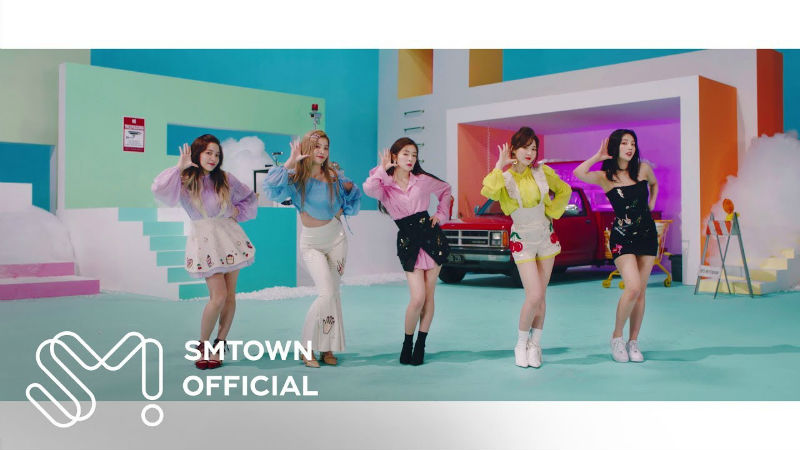

Kpop
Kpop is pretty much the only music I listen to now. I have been listening to it since 2011 and every year or two I would switch to like a different group. The current groups I like are Red Velvet and Fromis 9.

Kdrama
Ever since I started liking kpop, I started watching kdramas. It is something I do to relax and do while not studying or working. Watching shows was a great way for me to learn the Korean language as well.
Korean Culture
I am very fascinated by the Korean culture especially the Korean language. Since I am Chinese, I find it very interesting every time I see a sino-korean word. I have been to Korea multiple times and I still want to go back. I have also studied some Korean history before in university.